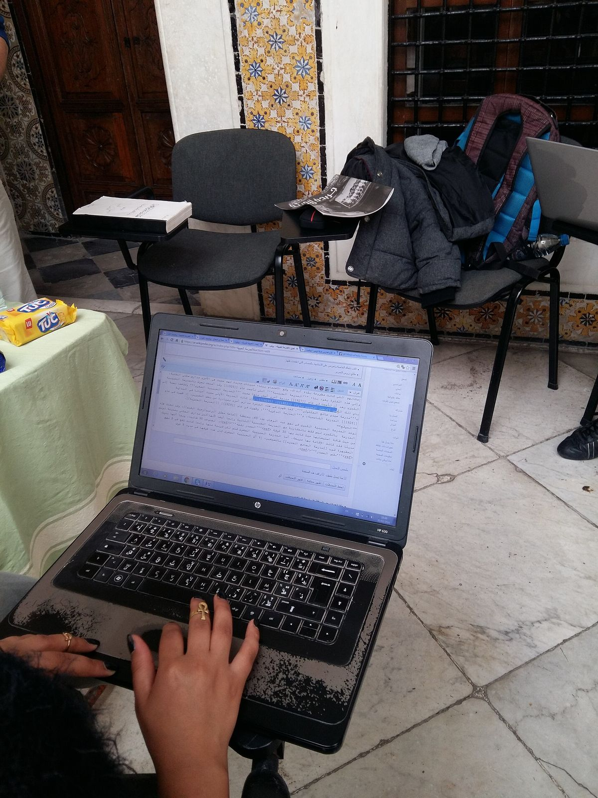
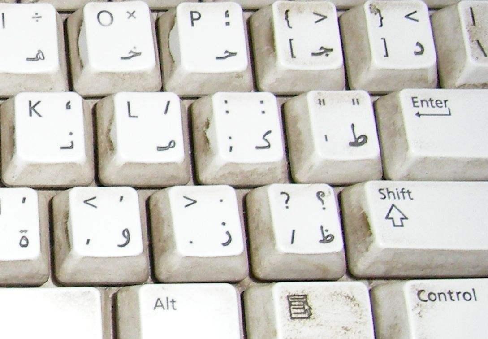
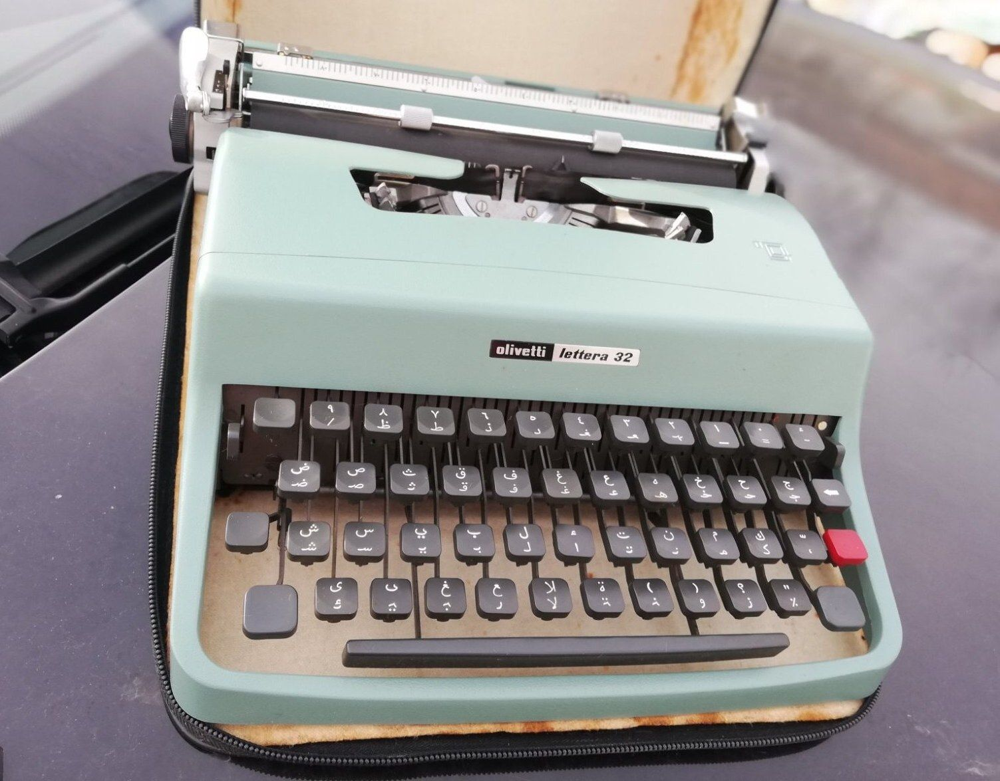

Arabic sentences, English words inside
That is how most of us talk about code: “راجع صفحة الـ login”. Nuvra is built for it, and login stays login.


Your English stays English
In Translate Arabic only, Nuvra translates the Arabic phrases and leaves every English word where you said it. Structured prompt rewrites the whole request as clear instructions for your AI tool.
Edit the sentence above, or try another:
Review the login page and improve the error messages
Pasted where your cursor was. Kept as you said them: login, error messages. Enter is still yours to press.
One shortcut, start to finish
-
A keypress
First, press Ctrl + Alt + Space in the field you are typing in.
-
As long as you talk
Then talk, in Arabic, English or both. Nuvra transcribes while you speak, and Esc cancels.
-
A moment
Next, press Enter to finish. Clear English is pasted at your cursor.
-
When you are ready
Last, read it and send it yourself. Nuvra never presses Enter in your app.
You choose what goes online
With local Whisper, your voice is turned into text on your own machine. Anything that goes online goes to a provider you picked and signed in to, and Nuvra tells you when it does.

Where it runs
| Job | Service | Where |
|---|---|---|
| Speech | Local Whisper | On your computer |
| Speech | Cohere Transcribe | Online, at Cohere |
| Speech | Wispr Flow | Online, at Wispr Flow |
| Translation | Ollama with gemma4:e4b | On your computer |
| Prompts | Codex or Claude Code | Online, your own account |
| History | Your last 10 texts | On your computer |
| Settings | Preferences and vocabulary | On your computer |
Nothing you say gets lost
The pill stays small while you talk. If a paste can’t land, your words wait on the clipboard and in History, one click from Copy . Models shows when Whisper is Ready , and Settings turns the window to Egyptian Arabic .
The window holds only History, Models and Settings. There is nothing to write in it: speaking always starts from the shortcut, wherever you are.
Download for WindowsQuestions before you install
Does Nuvra press Enter or send anything for me?
No. It pastes the text where your cursor was and stops there. Sending stays your action in your app. During a recording, Enter only finishes the recording.
Do I need an NVIDIA graphics card?
No. Local Whisper also runs on the processor, and a GPU makes it faster. Local models need a one-time download and several gigabytes of free disk space.
Which apps can it paste into?
Any app with a text field you can type in: an AI coding tool, a terminal, a chat window, an editor. If a paste can’t land, the text goes to the clipboard and History, and the pill says so.
Does my audio leave my computer?
Not with local Whisper. If you choose Cohere or Wispr Flow, that provider’s online service hears it. Structured prompts and translation fallback send text, not audio, through the Codex or Claude Code account you signed in with.
Why does Windows warn me when I install it?
The installer does not have a Windows publisher certificate yet, so SmartScreen may ask you to confirm. Updates are checked against the project’s own signing key before they install.
Can I use the app in Arabic?
Yes. Settings, then Language, switches the window and the pill to Egyptian Arabic, right to left. Your prompts stay in English.
Why is the installer called ArabicRelay-Setup?
Nuvra used to be called Arabic Relay. The installer keeps the old name so existing installations update cleanly, with their settings, history and models where they were.
Talk the way
you think
Nuvra 0.5.4 is free and open source, for Windows 10 and 11, 64-bit. The installer adds Microsoft WebView2 if you need it.
Download for Windows